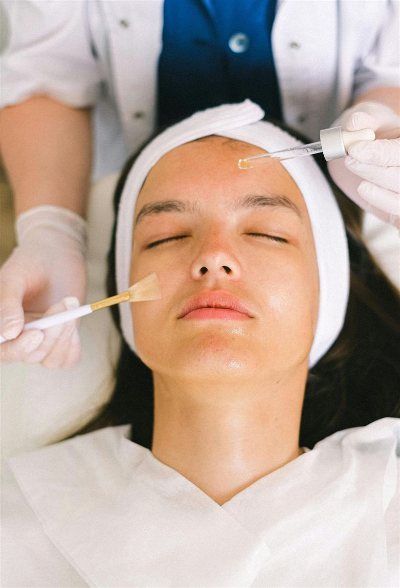
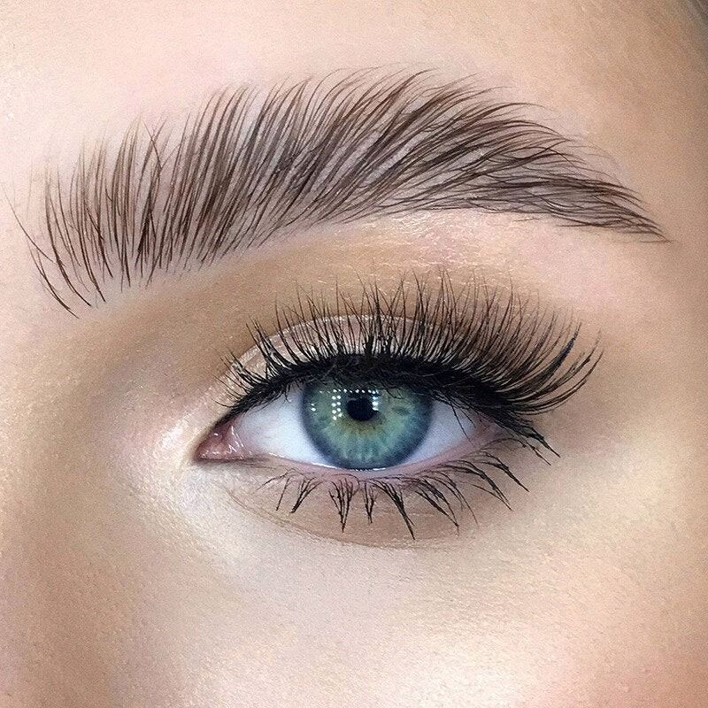
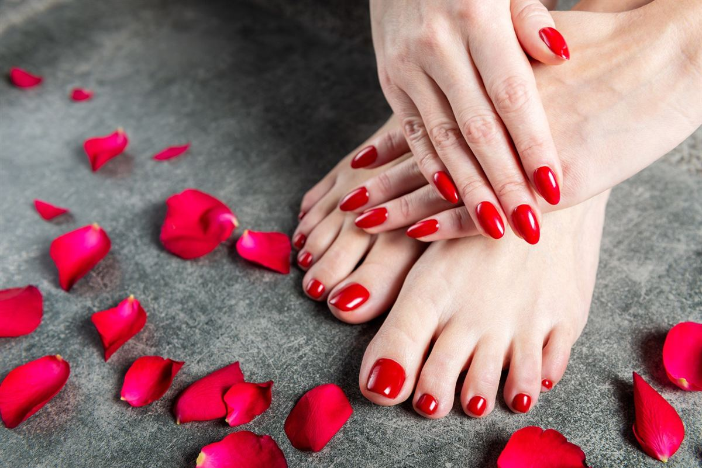
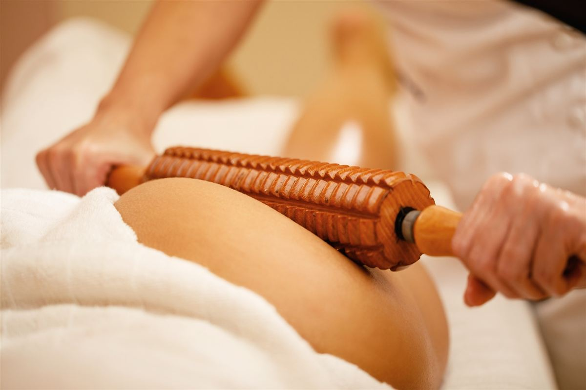
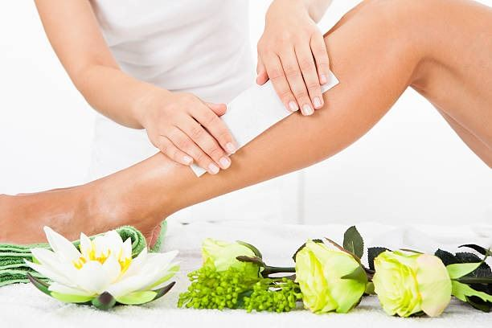
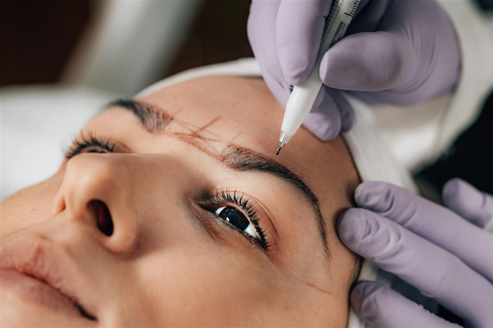

Akne og uren hud
Dybderens, skånsom udrensning og en hjemmeplejeplan, der passer til din hud. Ved moderat til svær akne anbefaler vi også at tale med din læge – behandlingerne kan supplere lægens behandling.
Anbefalet: ProSkin 60 · ProSkin 30
Alle behandlinger tilpasses din hud og dine ønsker. Klik på Book ud for en behandling for at vælge dag og tid.

Professionelle ansigtsbehandlinger tilpasset din hudtype og dine behov – fra en hurtig opfriskning til avanceret microneedling.
Hurtig og effektiv behandling med fokus på ét hudproblem – fx udbrud, tørhed eller træt hud.
Skræddersyet ansigtsbehandling med dybderens, eksfoliering, maske, massage og fugt.
Den lange, fordybende ansigtsbehandling til hud der trænger til ekstra pleje.
Naturligt ansigtsløft uden nåle – ansigtsbehandling kombineret med løftende massage og Gua Sha.
Fastere og mere tonet hud med avanceret massage, stimulering og lymfedrænage.
Microneedling med aktivt serum kombineret med ansigtsbehandling for opstramning og cellefornyelse.
Signaturbehandlingen: peeling, ProFace massage, microneedling med serum, maske og LED-lysterapi.
Alle behandlinger tilpasses din hud. Her er, hvad vi typisk anbefaler. Ved første behandling laver vi en hudanalyse og lægger en plan sammen.
Dybderens, skånsom udrensning og en hjemmeplejeplan, der passer til din hud. Ved moderat til svær akne anbefaler vi også at tale med din læge – behandlingerne kan supplere lægens behandling.
Anbefalet: ProSkin 60 · ProSkin 30
Dybderens og peeling renser porerne og fjerner døde hudceller, så huden bliver glattere og mere klar.
Anbefalet: ProSkin 60 · ProSkin 90
Beroligende behandling med skånsomme produkter og uden hårde peelinger. Et godt supplement til behandling hos din læge.
Anbefalet: ProSkin 30 · ProSkin 60
Peeling og microneedling med aktivt serum kan give en mere jævn hudtone over flere behandlinger, sammen med daglig solbeskyttelse.
Anbefalet: Microneedling med ansigtsbehandling · Advanced ProFace Microneedling + LED
ProFace Facial Exercise løfter og strammer naturligt uden nåle. Microneedling og LED-lys stimulerer hudens egen fornyelse.
Anbefalet: ProFace Facial Exercise inkl. Gua Sha · Luksus ProFace (Pro Firm) · Advanced ProFace Microneedling + LED
Microneedling kan forbedre hudens struktur over et forløb af behandlinger. Resultatet afhænger af arrenes type og dybde – dybe ar bør vurderes af en hudlæge.
Anbefalet: Microneedling med ansigtsbehandling · Advanced ProFace Microneedling + LED
Skånsom pleje og rådgivning om hudpleje som supplement til din læges behandling. Nancy har efteruddannelse i atopisk dermatitis og immunmedierede hudsygdomme.
Anbefalet: ProSkin 30 · ProSkin 60
Ansigtsbehandling er også for mænd og unge – fx mod uren hud, fedtet hud eller som en grundig dybderens.
Anbefalet: ProSkin 30 · ProSkin 60

Lash lift, brow lift / brow lamination, farvning og extensions, der fremhæver dit blik med et naturligt og holdbart resultat.

Manicure, pedicure og CND Shellac – smukke, velplejede negle med produkter af høj kvalitet.

Massage, rygbehandling og luksuriøse spa-behandlinger, der giver ro, balance og ny energi.
Kontakt mig for priser på kropsbehandlinger – de oplyses ved booking.
Afhjælper muskelspændinger og giver ro i kroppen.
Afrensning, peeling, dyb udrensning, rygmassage, maske og afsluttende creme.
Afslappende massage med varme, aromatiske olier.
Anti-cellulite træmassage med aromaterapi og produkter fra Karmameju.
Komplet luksusoplevelse: ansigtsløft, træmassage, fodpleje, kropspeeling og massage.

Skånsom og effektiv voksbehandling. Resultatet holder typisk 3–4 uger. Hårene bør være min. 0,5 cm lange.

Microblading, powder/ombré brows og combo brows. Kommer snart – permanent makeup åbner, når alle sundhedsmæssige og faglige krav er fuldt implementeret.
Permanent makeup er under professionel forberedelse og kan bookes snart. Priserne er vejledende. Læs om teknikker, heling og FAQ.
Fine, naturlige hårstrøg tegnet manuelt. Holdbarhed ca. 1–2 år.
Hårstrøg i fronten og blød shading i resten af brynet.
Microblading kombineret med shading for ekstra dybde og definition.
Maskinbaseret shading med blød farveovergang – lysere i fronten, mørkere i halen.
Korrektion af tidligere permanent makeup med opmåling, formgivning og nyt bryndesign.
Klippekort købes ved behandlingen. Kontakt mig gerne, hvis du har spørgsmål.
| Klippekort | Normalpris | Klippekortpris | Pr. behandling |
|---|---|---|---|
| ProSkin 60 – betal for 3 | 1.875 kr. | 625 kr. | |
| ProSkin 60 – betal for 5, få den 6. gratis | 3.125 kr. | 520 kr. | |
| Microneedling – betal for 3 | 4.500 kr. | 1.500 kr. | |
| Microneedling – betal for 5, få den 6. gratis | 7.500 kr. | 1.200 kr. | |
| Advanced målrettet ansigtsbehandling – betal for 3 | 5.325 kr. | 1.775 kr. | |
| Advanced målrettet ansigtsbehandling – betal for 5, få den 6. gratis | 8.875 kr. | 1.480 kr. | |
| Luksus ProFace (Pro Firm) – betal for 3 | 2.985 kr. | 995 kr. | |
| Luksus ProFace (Pro Firm) – betal for 5, få den 6. gratis | 5.475 kr. | 913 kr. |
En ansigtsbehandling koster fra 395 kr. for ProSkin 30 (30 min). ProSkin 60 koster 725 kr., og signaturbehandlingen Advanced ProFace Microneedling med LED koster 1.995 kr. Med klippekort sparer du op til ca. 30 % pr. behandling.
Copenhagen Cosmetology ligger i Herlev ved København og har kunder fra Herlev, Ballerup, Gladsaxe og hele Københavns omegn. Behandlinger udføres midlertidigt i diskrete og trygge omgivelser, mens vi søger godkendt kliniklokale. Den præcise adresse sendes med din bookingbekræftelse.
Du kan booke online døgnet rundt på booking-siden, ringe på 28 68 93 84 eller skrive til copenhagencos@gmail.com. Der er ingen faste åbningstider – tiden aftales efter dine ønsker.
Afbud skal ske senest 24 timer før din aftale. Ved afbud samme dag betales 50 % af behandlingens pris, og ved udeblivelse betales 100 %.
Du betaler ved behandlingen med MobilePay eller kontant. Klippekort og gavekort betales forud.
Alle behandlinger udføres af Phattree Nancy Jensen, lægeeksamineret kosmetolog og hudterapeut (Nordsjællands Kosmetologskole, 2021) med 10 års erfaring i branchen.
Vi arbejder med kvalitetsmærker som Dermalogica, Decléor, Lycon, Elleebana og CND. Produkterne er fri for parabener, sulfater og skadelige kemikalier.
Ja. Et gavekort kan bruges til alle behandlinger – ansigtsbehandlinger, vipper og bryn, negle, voks og kropspleje. Bestil det på e-mail copenhagencos@gmail.com eller tlf. 28 68 93 84.
Hudens naturlige fornyelse tager ca. 4 uger, så mange får en ansigtsbehandling hver 4.–6. uge. Ved et forløb mod fx akne eller uren hud kan det være oftere i starten. Vi lægger en plan sammen ved første behandling.
Ja – med dybderens, skånsom udrensning og en hjemmeplejeplan, der passer til din hud. Ved moderat til svær akne anbefaler vi også, at du taler med din læge. Behandlingerne hos os kan fint supplere lægens behandling.
Lash lift løfter og buer dine egne vipper fra roden, så de ser længere og mere åbne ud – uden extensions. Hos os er farvning og en plejende biotinbehandling inkluderet. Behandlingen tager ca. 50 minutter og koster 625 kr.
Et lash lift holder typisk 6–8 uger, afhængigt af dine vippers naturlige vækst. Resultatet forsvinder gradvist, efterhånden som nye vipper vokser frem.
Nej, ikke når det udføres korrekt med professionelle produkter og den rette virketid. Vi afslutter med en plejende biotinbehandling. Undgå at få lavet lash lift oftere end hver 4. uge, så vipperne ikke overbehandles.
Brow lamination – også kaldet brow lift – er en behandling, hvor brynhårene formes og fikseres, så brynene ser fyldigere, mere ensartede og velplejede ud. Det er ikke botox eller kirurgi. Hos os er farvning, retning og biotinpleje inkluderet.
Brow lamination holder typisk 4–8 uger, afhængigt af din hårvækst og efterpleje. Undgå vand, damp og makeup på brynene de første 24 timer.
Lash lift løfter og farver dine egne vipper og kræver ingen opfyldning. Vippe extensions er kunstige vipper, der sættes på dine egne én for én (klassisk eller volume) og giver mere længde og fylde, men skal opfyldes jævnligt.
Fortæl os altid ved booking, hvis du er gravid. Mange ansigtsbehandlinger kan tilpasses graviditet, mens nogle behandlinger, fx microneedling, venter vi med. Er du i tvivl om farvning af vipper og bryn, så tal med din jordemoder eller læge først.
Ja. Ansigtsbehandling er også for mænd og unge – fx mod uren hud, fedtet hud eller som en grundig dybderens. Behandlingen tilpasses altid din hud.
Med et klippekort køber du flere ansigtsbehandlinger på én gang til en lavere pris pr. behandling – fx microneedling, hvor du betaler for 5 og får den 6. gratis. Klippekort betales forud. Se alle klippekort under Behandlinger & priser.
Resultatet af en voksbehandling holder typisk 3–4 uger. Hårene bør være mindst 0,5 cm lange, for at voksen kan tage fat.
Kontakt mig for en gratis konsultation og hudanalyse, eller book direkte online.
Book tid